Reading Gaze at Scale: Mapping Visual Perception in Nineteenth-Century British Fiction
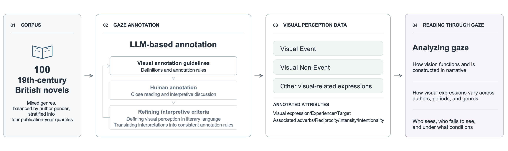
Who sees and who is seen in literature shapes whose perspective gives meaning to the world and whose identity takes form through another’s eyes. This study develops an LLM-based pipeline for annotating expressions of visual perception and applies it to 100 nineteenth-century British novels. The resulting dataset provides a basis for exploring how gaze is formed and exchanged in literary texts. The dataset systematically records who perceives what, along with the intensity and intentionality of visual attention. It captures moments of seeing, failed attempts to see, and deliberate refusals to look, allowing us to examine how attention directed toward characters, objects, and spaces organizes relationships and narrative worlds. We then extend the analysis across periods, genres, and authors, tracing differences and shifts in how gaze operates within the corpus. Deciding what counts as gaze is itself an interpretive question. We develop the pipeline through repeated comparisons between human annotations and LLM readings. Contested cases raise questions such as whether a description of scenery conveys a character’s visual experience, whether an idiomatic use of “see” counts as gaze, and how an intention to look differs from an act of seeing. Insights from examining such cases are fed back into the annotation guidelines, and the model’s readings under each revision in turn prompt further scrutiny of the interpretive principles behind them. This reciprocal process aims to improve detection accuracy while making explicit and traceable the critical judgments about what counts as gaze in literature and exploring how LLMs can be guided to read with such interpretive judgments.
Placed, Spoken Of, Speaking: Three Registers of Character Space in Shakespeare Across Gender and Genre
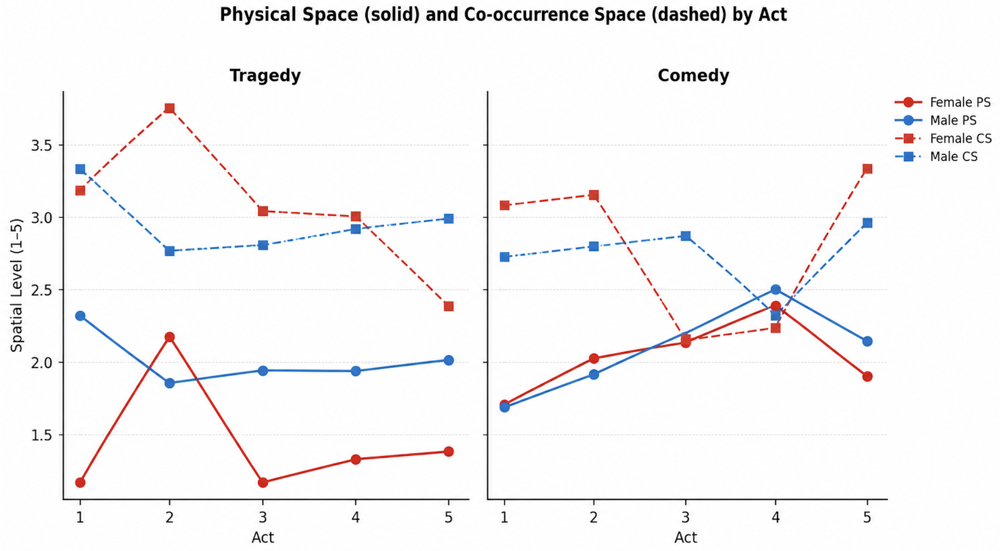
This study begins from a conceptual claim: that a character’s spatial freedom is not a quantity she possesses but a configuration among three registers that need not coincide. Physical Space records where the play places her in a scene, as distinct from places merely spoken of. Co-occurrence Space records the spatial range that others’ speech activates around her name, treating proximity, in Jakobson’s metonymic sense, as the datum whether the vocabulary asserts, compares, or denies. Speech Space records the range invoked in her own speech. Because activation is counted whatever the vocabulary claims, these measures report where spatial language gathers rather than what it asserts, a deliberate scope that lets the study ask whether the registers diverge at all. Treating them as separate turns confinement from an assumption into something that can be located. Two gaps give the framework its working purpose: one contrasts discursive with physical space, the form a compensation hypothesis predicts, with discourse expanding where the body is confined; the other contrasts others’ talk with her own speech, asking whose discourse departs from her circumstances. Applied to 242 characters across eighteen Shakespeare plays, the framework shows what a single measure would conceal. The composite gap does not reach significance, which is informative in itself, because decomposing it isolates where divergence lives: women’s placement is gendered in tragedy from the first act, while it is the talk of others, not women’s own speech, that departs from where the play puts them, polarized toward domestic and cosmic extremes rather than the civic middle range that gathers around men. Disguise separates the registers in the same way: it widens physical movement, yet for Rosalind, on a small base, it narrows her own spatial range. The contribution is a way of asking where confinement is enacted, in placement, in others’ talk, or in a woman’s own voice, which refines accounts that treat these as one regime and shows that genre organizes character space through how independently the registers align.
From Page to Presence: Translating Margaret Cavendish’s The Blazing World into an Immersive VR Game
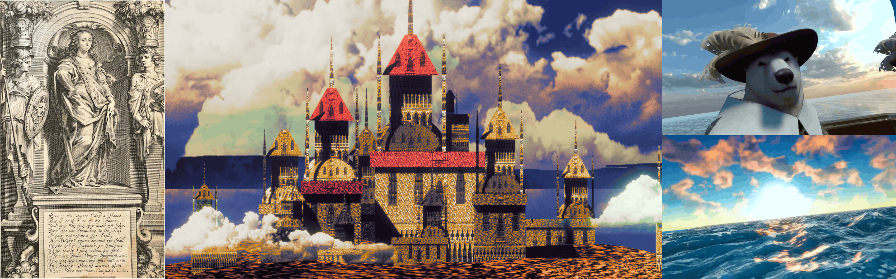
This project translates Margaret Cavendish’s The Blazing World (1666) into an immersive VR game experienced through a head-mounted display, examining how textual description is reconstructed as spatial experience. Cavendish’s text is an apt candidate for such a translation, because it draws the reader into a world it has invented whole, accumulating vivid description of creatures, landscapes, palaces, and light at a density that approaches the spatial specificity of a designed environment. Built in Unity and Blender, the prototype incorporates gamified elements such as choices, tasks, and rewards to sustain engagement. The project develops a typology that sorts the novel into four kinds of scene — transit, display, colloquy, and observation — distinguished by how much freedom each can grant the viewer and how strictly it depends on narrative sequence. Some scenes transfer almost literally, since the source has already fixed the trajectory, the enclosure, and the materials, while others demand substantial reinvention, and the distance between seventeenth-century prose genres and spatial media is itself one of the project’s central findings. Drawing on Henry Jenkins’s “narrative architecture,” David Herman’s “storyworld,” and Mark J. P. Wolf’s “subcreation,” the project asks how narrative structure is reconfigured in VR and whether interaction reinforces the original’s message or generates a new narrative experience. Pursuing a translation as faithful as possible to the source’s content and tone, it documents at each stage what was intended, what the build required, and what proved unnecessary. The project ultimately aims to extend the typology into a manual for rendering particular kinds of literary scenes in immersive media: a transferable resource for future creators translating texts into VR.
Narrative Lookahead in LLMs: Event-Level Decodability, Predictive Advantage, and Steering
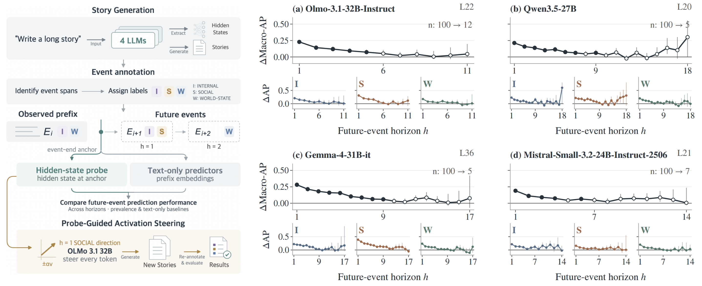
Do language models carry information about narrative events before writing them, and how far ahead? We examine narrative lookahead through salient, state-changing events rather than tokens or response-level attributes. We extract 23,355 LLM-annotated events from 2,000 stories generated by four open-weight LLMs, labeling them along three nonexclusive dimensions of change: within agents, between agents, and in the story world, with human validation on a subset. Event segmentation and plot-independent labels enable comparisons across stories at horizons measured in events rather than in tokens. At event ends, we probe hidden states for upcoming event types and compare predictions with text-only predictors using matched prefixes. Across four models, future event types are decodable above prevalence baselines for at least four subsequent events, but probes significantly outperform both primary text-only predictors only for the next event. In exploratory steering with OLMo-3.1-32B, a probe-derived direction shifts the proportion of the target event type in both intended directions at higher strengths. Our event-level approach links the prediction of future narrative developments to interventions that reshape subsequent event composition.
Self- and Other-Labels Induce Bidirectional Bias in LLM Judges
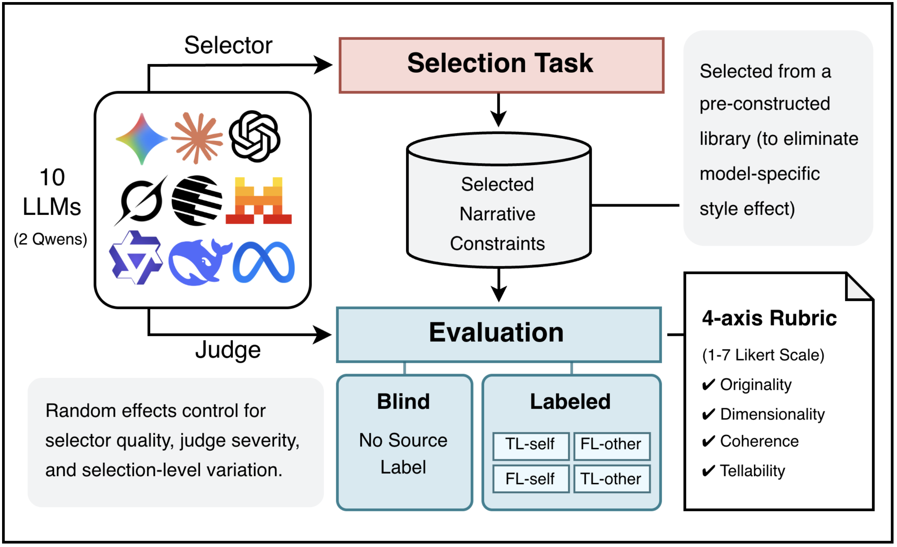
As LLM-as-a-judge systems become increasingly widespread, self-preference in LLMs—the tendency to favor one's own outputs—raises growing concerns about evaluation reliability. However, it has been studied predominantly on generated text, where stylistic features and response quality are inevitably conflated. As a result, existing measurements cannot separate genuine self-preference from these confounds. We address this by changing the object of evaluation: instead of judging generated text, ten LLMs assess narrative constraint selections, which carry no model-specific stylistic fingerprint yet retain a recoverable model-specific signature. We run two experiments that yield distinct findings. Under blind evaluation, self-preference largely disappears once selection quality and evaluator severity are controlled. It vanishes on three of four rubric dimensions and reverses on the fourth, where judges rate their own selections as less original. Under matched quality, however, self- and other-labels alone—without naming any model—shift scores bidirectionally: LLM judges inflate scores for self-labeled selections and deflate those for other-labeled ones regardless of the selection’s actual source. We make two contributions: 1) authorship attribution is a distinct driver of evaluation bias, and 2) open-ended, ground-truth-free tasks can serve as controlled instruments for studying LLM judge behavior.
Historicizing Retranslation Culture through Aligned Meaning Segments (AMS): An LLM-Assisted Framework for Comparative Diachronic Analysis
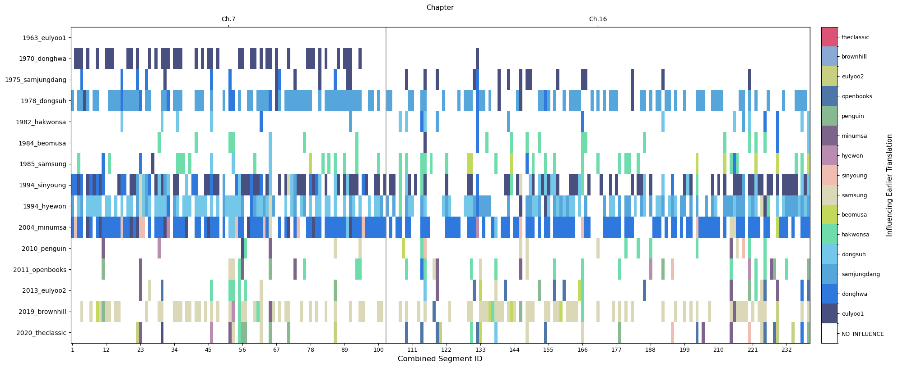
Developing scalable methodologies to trace subtle cultural and linguistic shifts across extensive historical corpora remains a central challenge in digital humanities, and retranslation corpora are well suited to this task because they hold the source text constant, thereby enabling researchers to trace diachronic change through systematic differences in how the same passages are rendered across editions. This study proposes and validates an LLM-assisted analytical framework for retranslation corpora that combines pre-processing, voting-based LLM self-ensemble sentence alignment, post-processing, and analysis within a single scalable pipeline. To support systematic comparison across retranslations, the framework constructs Aligned Meaning Segments (AMS), defined as the smallest contiguous units of meaning that make it possible to align parallel translation segments within the same source segment. We validate the framework through the case of fifteen Korean translations of Jane Eyre. The framework enabled AMS-based estimation of Influence Ratio and Differentiation Ratio, suggesting three recurrent publishing periods in which a highly differentiated translation first appears and is then followed by later editions showing progressively greater influence from earlier versions. Feature-based diachronic analysis further identified the Subject Particle Ratio (i/ga) and Topic Particle Ratio (eun/neun) as salient markers of historical variation, linking linguistic change to broader dynamics of Korean retranslation and publishing culture. By transforming retranslation corpora into searchable, segment-aligned data, the framework provides a reusable model for comparative diachronic analysis and a methodologically robust pathway for integrating LLMs into translation studies and digital humanities.
Fragmented Narrative, Enduring Emotion: The Repetition of Emotional Trajectories in Online Pride and Prejudice Rewriting Practices
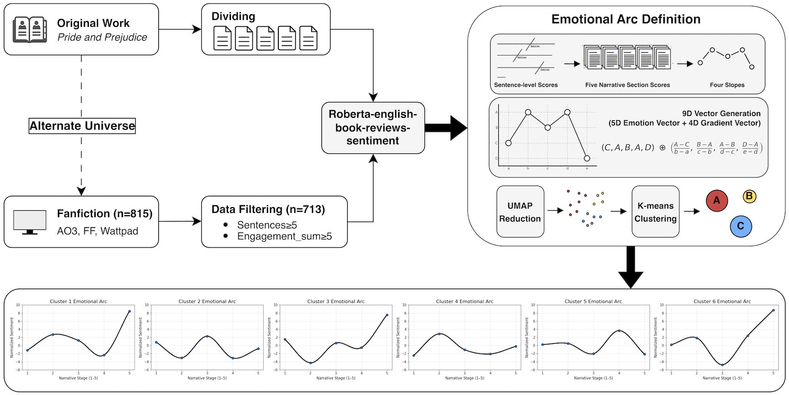
In the digital platform era, literary canons no longer survive through plot repetition but through the reassembly of emotions. While previous studies on repetition have emphasized narrative recurrence through the reproduction of plot, message, and symbolic structures, this study presents emotion, not meaning, as the unit of repetition in narrative creation and consumption from meaning to emotion. Applying UMAP dimensionality reduction and K-means clustering to the fanfiction corpus, this study analyzed over 700 Pride and Prejudice AU fanfiction works collected from Archives of Our Own, Fanfiction.net, and Wattpad. We identified six representative emotional arcs. Notably, these arcs align precisely with the emotional arcs derived from the original work’s narrative segments. We also confirm that even when the world, setting, events, and character relationships undergo dramatic shifts in fanfiction, emotional rhythms remain distinct and are reproduced with high stability. The finding suggests that rewriting practices on modern digital platforms prioritize emotional re-experience over preserving meaning and that readers select works based not on the text’s message, but on the emotional experience they anticipate. In this process, platforms accelerate the modularization of affect by structuring emotions into stackable experiential blocks through search, sorting, recommendations, and comments. This study positions the emotional trajectory as a core component of narrative theory and the infrastructure of narrative construction. By theorizing the practice of narrative repetition in the 21st-century technological environment, it proposes a new analytical framework for narrative studies in the digital age.
How Small Language Models Refuse: Toxicity Handling in Character Chatbots
Language models are now evolving from simple question-and-answer systems into character chatbots that maintain specific personalities and worldviews. Yet character chatbots carry distinct characteristics compared to general conversational models. Using a toxic-chat dataset, this study analyzes how SLMs handle toxicity when deployed as character chatbots. It redefines toxicity from the perspective of how safe response mechanisms affect character narratives, rather than as the generation of harmful expressions. Responses are classified using the following criteria: hard refusal, moralizing refusal, over-general safety, persona-consistent refusal, topic shift, and partial compliance. This study examines the response strategies exhibited by SLMs deployed as character chatbots when encountering toxic dialogue inputs and compares them with those of LLMs in terms of their impact on narrative coherence and character immersion.
The People Without a Word: Tracing the Fragmented History of Gender Nonconformity in British Newspapers
This study examines how the amorphous and collective concept of “gender-nonconforming” has been socially constructed and differentiated over time, using a large-scale text analysis of a historical British newspaper dataset. It argues that contemporary identity terms such as “transgender,” “nonbinary,” and “butch” are not intrinsic entities but rather outcomes produced and shaped within historical discourses and institutional classification systems. Thus, the research goal is not to “discover modern identities” within past newspaper records, but to trace how the concept of gender-nonconforming has been cut, named, and reassembled by linguistic and social forces. Using the NewsWords dataset, it analyzes how gender-nonconforming bodies were named and framed across time, region, and newspaper type. Using the constructed text corpus, this study contains NLP-based computational analysis, extracting neighboring words from diachronic word embeddings, collecting candidate expressions via co-occurrence analysis, and clustering them by usage contexts to construct a discursive repertoire. Through this, the study traces how gender-nonconforming bodies were constructed, consumed, and erased within newspaper discourse.
Korean “Complete Works of World Literature” as a Cultural Phenomenon (working in collaboration with the National Library of Korea)

This project aims to systematically document and analyze the complete corpus of translated “Complete Works of World Literature” collections held by the National Library of Korea. We have cataloged collections from the 1950s-1960s and 1990s onward, and now we are filling in the crucial 1960s-1990s gap to create the first complete digital archive of Korea's unique heritage of “Complete Works of World Literature.” These collections function not merely to introduce foreign literature to Korean readers, but also serve as cultural markers of social mobility, commercial publishing strategies, and educational capital within Korea's highly competitive academic environment. And thus the goal of this project goes beyond simple cataloging. As a group of researchers working in the fields of literary studies and information science, we are building rich metadata that connects authors, translators, publishers, and readers across decades, linking our data to international databases like Wikidata and including detailed information about publication histories and cultural networks. We imagine this data collection to function as a lasting digital resource that can be used academically and creatively by researchers, educators, and readers. By allowing people to explore and discover patterns on their own, the National Library of Korea becomes an active hub for research and cultural understanding, rather than a static institution that houses intellectual resources. Our interactive database that makes Korea's fascinating tradition of “Complete Works of World Literature” accessible to everyone will open up new possibilities for historical, computational, and cross-cultural literary research.
Korea Reads Jane Eyre
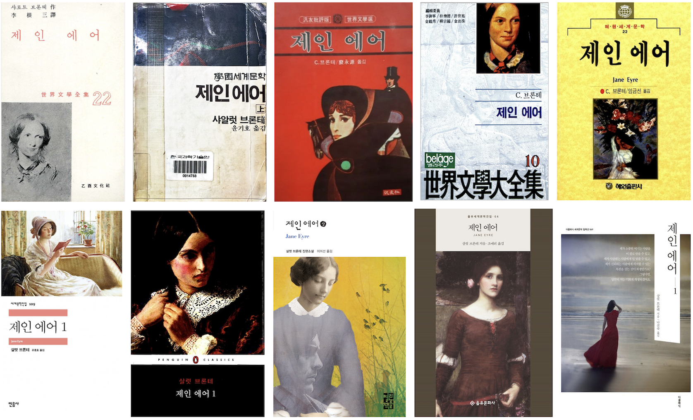
This project examines the complex cultural landscape of Korean translations of Charlotte Brontë’s Jane Eyre. This research is founded on our particular interest in the unique Korean literary tradition of “Collected/Complete Works of World Literature”(세계문학전집) and its sociopolitical implications. We have collected and processed 15 different translations of Jane Eyre published over 60 years, and through both computational stylometric analysis and close reading, we demonstrate subtle yet significant differences across translations. The project combines a historical examination of these uniquely situated cultural productions with quantitative linguistic analysis. By developing new methodologies for understanding translation practices, this research adds to the traditional modes of translation studies that primarily focus on linguistic accuracy or distance from the source text. Our approach builds on the theoretical perspective of translation as a dynamic process of proliferation rather than mere reproduction. Through our interdisciplinary analysis, we also raise important questions about the limitations of current Natural Language Processing tools in analyzing literary texts. This study ultimately aims to present implications for future computational approaches to literary/translation studies and illustrate how the historical practices of literary retranslation have shaped and have been shaped by the peculiar contexts of modern Korea.
Quantifying Creativity: Developing Metrics for Evaluating AI-Generated Narratives
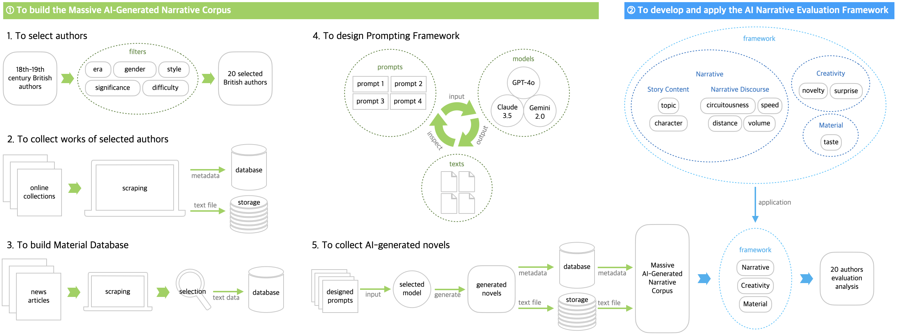
This study aims to scrutinize the quantified features of narrative and creativity and employ them to compare the works of great writers with AI-generated ones using various quantitative techniques from computational narratology and creativity assessment in order to address the lack of studies on AI-generated narratives. Our work consists of three stages. First, we create the Massive AI-Generated Narrative Corpus (MANC), which collects the creations of LLM-based simulated authors who are categorized as eighteenth and nineteenth century British literature authors. To quantitatively evaluate this corpus, second, we design a framework that synthesizes existing computational methodologies, which integrates various previous narratology and creativity assessment studies. Third, the works in the corpus are compared, analyzed, and evaluated alongside those of the original authors leveraging the framework, and then we publish an evaluation report on our website. Our challenging work provides the first-ever quantitative assessment of AI-generated narratives, contributing to the potential for human-AI writing collaboration and the advancement of a new narratology in the AI era.
Distorted Spatiality: Changing Reader’s Perception of Space to Place Based on Networks in Closed-Circle Mystery by Agatha Christie
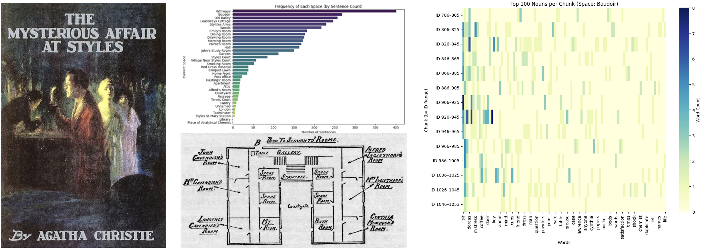
The project addresses nine closed-circle mysteries by Agatha Christie: The Mysterious Affair at Styles, Murder on the Orient Express, Death on the Nile, Death in the Clouds, Problem at Sea, Murder in Mesopotamia, Appointment with Death, And Then There Were None, and Evil Under the Sun. The mysteries address murder among a limited number of suspects in a closed environment, having reasonable means, motives, and opportunities for crime. Their readers experience a plot twist when the detective reveals the truth of the murder, although its clues already exist in the text. The cause is the distorted perception of space in the mysteries by the readers. While reading, they perceive space as a place, starting with the freedom to investigate and ending with the completeness to close the case. During the process, they also feel spatiality based on the temporal interaction among characters, locations, and objects. The change and interaction will be mainly analyzed and visualized as networks on the maps of each mystery from the perspective of readers. The research aims to suggest network visualization as a tool for presenting the relation among spatial, social, and temporal contexts in English detective fiction and implies the possibility of development to narrative criminology.
The Politics of Fanfiction: Harry Potter, Transgender Narratives, and the “Dead Author”
This project focuses on the transgender fanfiction that emerged within the Harry Potter fandom as a response to J.K. Rowling's transphobic statements posted in 2019. Through text analysis of Harry Potter fanfiction from 2016 to 2023 retrieved from Archives of Our Own, this research discusses the interplay between fanfiction, author, and society, highlighting its distinctive characteristics. Implementing methodologies such as cosine similarity, word embedding, and dimensionality reduction to examine the narrative and shifts in word usage, it argues that fanfiction cannot be seen as mere resistance or reinterpretation but should be recognized as a process of creating a multi-layered, collective narrative that interacts internally while simultaneously engaging with broader societal discourses. Minor genres of fanfiction grow in a way that borrows the schema of the major genres to create their own narratives, and major genres also incorporate features that address social minorities. This study ultimately addresses the question of what fanfiction is and how it should be studied, arguing that its collective feature makes it difficult to capture its landscape with a selected list of works.
Reading Artificial Beings: Character Studies in Korean SF Literature
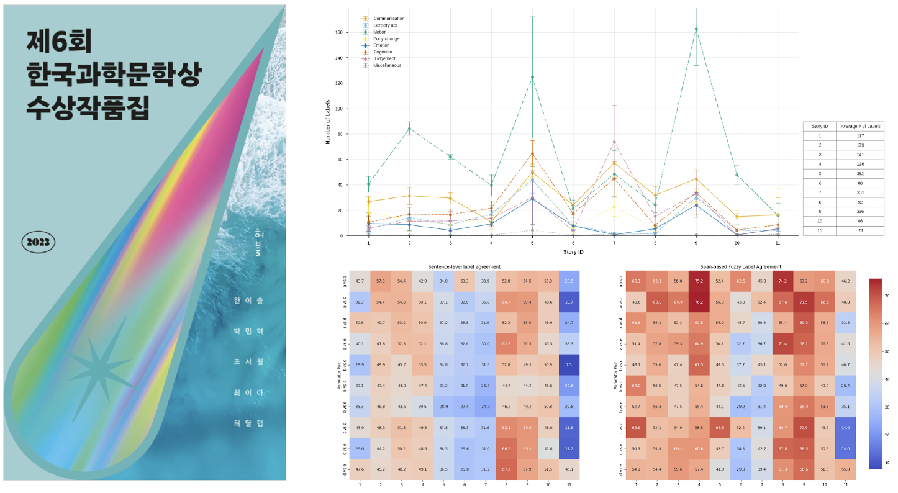
This project examines how artificial beings are represented as characters in contemporary Korean science fiction, exploring social perceptions, understanding, and expectations about artificial intelligence (AI) in modern society. The study focuses on the significant transformation of Korean SF literature since the late 2010s, viewing its rising popularity as a cultural and technological phenomenon. This project investigates how contemporary SF literature interprets and portrays AI as social agents amid rapid technological advancement by analyzing the behavioral patterns and literary representations of artificial beings. The methodology combines traditional literary analysis with computational approaches, comparing interpretations between human experts/readers and large language models (LLMs). Specifically, the project develops an eight-label classification system for analyzing character behaviors, enabling systematic observation of behavioral patterns and interactions of artificial beings. This methodological approach reveals how artificial beings express and resolve their existential concerns and ethical dilemmas through their physical embodiment (machine-body). Building on these observations, the project explores the narrative significance and symbolism of artificial being representation in Korean SF, contributing to our understanding of how literary narratives both shape and reflect societal attitudes toward artificial intelligence.